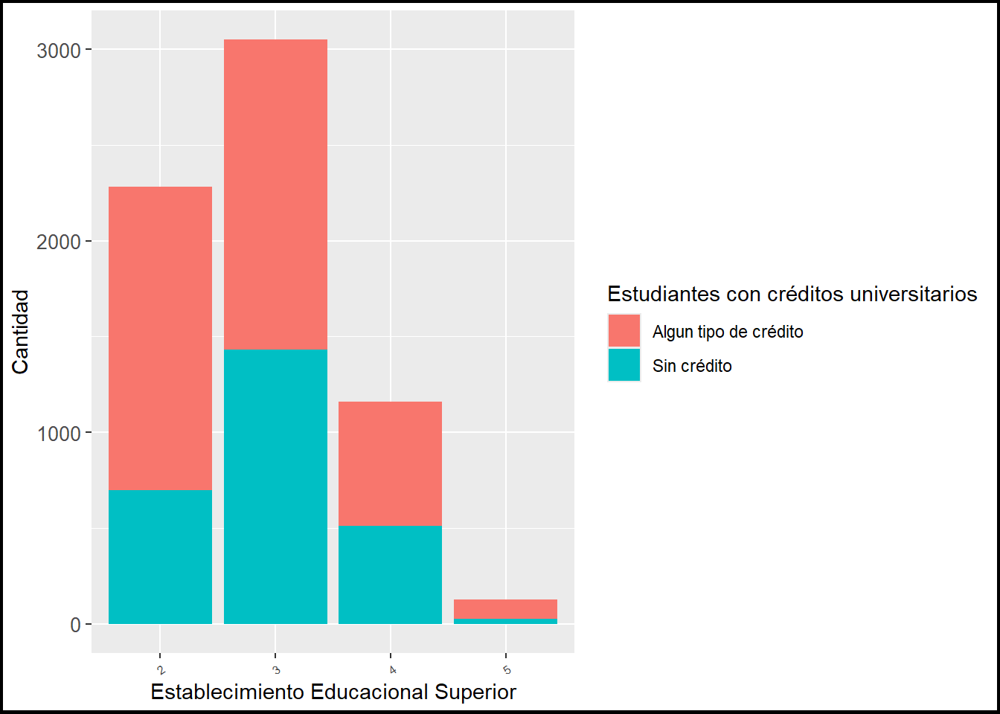
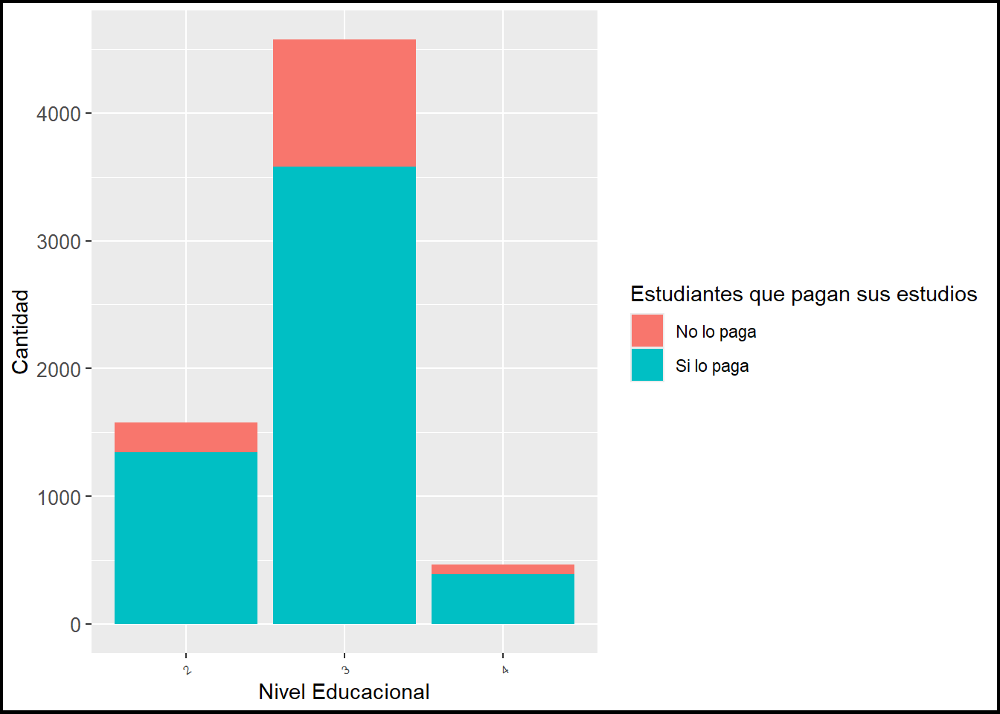

load("C:/Users/franr/OneDrive/Documentos/GitHub/Trabajo-R-Uah/Processing/Procesamiento Trabajo Creditos Universitarios.Rdata")El sistema de creditos en la educación superior: Endeudar para educar
Introducción
La promesa de una movilidad social en el ingreso a la educación superior en Chile es una premisa que, dentro de las lógicas familiares para lograr un ascenso social se muestra como una gran oportunidad con una buena proyección a futuro en el mercado laboral, la esperanza por una oprtunidad de un mejor futuro configura un horizonte al cual son los jóvenes de las familias quienes tienen el llamado de intentarlo, estableciendo de esta forma, una determinada manera de construir formas de ingreso y acceso a la educación superior.
El endeudamiento como un sistema de financiamiento de la educación aparece como un apéndice de un sistema neoliberal que ha hecho del Estado un aparato a favor del mercado que ha vuelto clientes a los individuos por medio de un intervencionismo, en función de un sistema que promete movilidad social a costa de una deuda mucho mayor de las expectativas de mejoras que la propia educación superior promete, como lo expone en su estudio de gubernamentalidad Lorena Pérez-Roa, Lorena Pérez-Roa, and Pérez-Roa (2018) referente a un Estado reproductor de deudas en el sistema educacional.
Los factores como el tipo de educación en la que se desarrollan las personas hasta el ingreso a la educación superior trae consigo una serie de temores frente al gran costo que implica el acceso a la educación superior, Vicente Espinoza et al. (2013) se pregunta por el tipo de carrera estudiada, la deserción de los estudios y la empleabilidad son constantes a la hora de la toma de decisión por entrar a la educación superior, por ende, es señal de una gran inseguridad para los estudios de la estratificación social.
En profundización a esto último se condice con la evidencia de altos grados de correlacion entre estudiantes de enseñanza media de colegios científicos humanistas que son más propensos a estudiar con creditos que estudiantes provenientes de la educación técnica, quienes son más reacios al financiamiento por endeudamiento, como expone Olavarría Gambi and Allende González (2024). En favor de esto, se complementan con los estudios realizados por Denegri Coria et al. (2011) quien plantea una escala de actitudes orientadas a los créditos, en la cual se construyen perfiles que guardan relación con el endeudamiento, teniendo como principal hallazgo en la ciudad de Temuco, un 42,4% de los estudiantes con un perfil austero frente al uso de creditos, optando por evitar la deuda y buscar el ahorro.
La relevancia de un estudio de este tipo es que resulta una aproximacion hacia el modelo de educacion de mercado y sus impactos post estudios en los distintos sectores educacionales, de esta manera, el sistema de educación por endeudamiento afectaría de manera desigual tanto a los estudiantes provenientes de la educación técnica, humanista científico y artística, significando una oportunidad para muchos pero un impedimento para muchos otros en la búsqueda de una mejora de la calidad de vida.
A raíz de lo expuesto anteriormente se espera analizar que a una mayor cantidad de financiamento vía créditos o endeudamientos en el acceso a la educación superior incrementa la percepción de desigualdad en los estudiantes, de esta forma acentuando la crisis de un sistema de educación de mercado en Chile.
Análisis de datos
Los datos producidos durante la realización de esta investigación dan cuenta de un fenómeno mercantil que ha generado importantes cambios en el sistema de educación superior mediante el financiamiento de carreras técnicas y profesionales a través de créditos fiscales, transformando así la educación superior en un sistema de endeudamiento progresivo en el cual los estudiantes deben optar al crédito y a la alta probabilidad de endeudarse al terminar sus estudios para lograr incorporarse en un mercado laboral cada vez más exigente y competitivo.
En primer lugar, mostraré una tabla que nos adentrará en el panorama estudiantil al interior de la educación superior en Chile. Para esto abriré la base de datos:
Realizamos una instalación de paquetes a utilizar:
pacman::p_load(sjlabelled,
dplyr,
stargazer,
sjmisc,
summarytools,
kableExtra,
sjPlot,
corrplot,
sessioninfo,
ggplot2) summarytools::dfSummary(casen_superior, plain.ascii = FALSE)### Data Frame Summary
#### casen_superior
**Dimensions:** 6617 x 4
**Duplicates:** 6575
------------------------------------------------------------------------------------------------------------------------------------
No Variable Label Stats / Values Freqs (% of Valid) Graph Valid Missing
---- --------------- --------------------------------- ---------------- -------------------- ------------------ ---------- ---------
1 credi_sup\ Tipo de crédito 1\. 0\ 3948 (59.7%)\ IIIIIIIIIII \ 6617\ 0\
[factor] 2\. 1 2669 (40.3%) IIIIIIII (100.0%) (0.0%)
2 nivel_educ\ Nivel educacional 1\. 2\ 1579 (23.9%)\ IIII \ 6617\ 0\
[factor] 2\. 3\ 4573 (69.1%)\ IIIIIIIIIIIII \ (100.0%) (0.0%)
3\. 4 465 ( 7.0%) I
3 pago_carrera\ Paga por la carrera que estudia 1\. 0\ 1299 (19.6%)\ III \ 6617\ 0\
[factor] 2\. 1 5318 (80.4%) IIIIIIIIIIIIIIII (100.0%) (0.0%)
4 estab_sup\ Tipo de establecimiento 1\. 2\ 2282 (34.5%)\ IIIIII \ 6617\ 0\
[factor] 2\. 3\ 3049 (46.1%)\ IIIIIIIII \ (100.0%) (0.0%)
3\. 4\ 1160 (17.5%)\ III \
4\. 5 126 ( 1.9%)
------------------------------------------------------------------------------------------------------------------------------------view(dfSummary(casen_superior, headings=FALSE))Switching method to 'browser'Output file written: C:\Users\franr\AppData\Local\Temp\RtmpOAuvab\file47c4d16cda.htmlEstos primeros datos nos dan una muestra general del financiamiento de los estudiantes de distintos niveles y establecimientos educacionales, del cual la población de estudiantes superiores se ve distribuida en tres niveles educacionales, teniendo como el más frecuente para esta población el nivel profesional con un total de 4.573 casos, seguido por la formación técnica nivel superior con un total de 1.579 estudiantes, mientras que el nivel de posgrado se encuentra con 465 casos.
A su vez, el tipo de establecimiento educacional al que asisten los estudiantes será clave para determinar cuántos estudiantes que se encuentran cursando alguna carrera en estos establecimientos están financiando sus estudios mediante un tipo de crédito. En este aspecto, encontramos que son 2.282 estudiantes que se encuentran cursando carreras en institutos profesionales o centros de formación técnica, mientras que serán 4.209 estudiantes en total los que cursen en establecimientos universitarios, los cuales 3.049 serán de universidades privadas y 1.160 serán de universidades estatales.
Para adentrarnos más en la situación de financiamiento de estas carreras nos preguntamos por cuántos de estos estudiantes, que se encuentran en el sistema de educación superior, pagan el costo de la carrera o si tienen algún beneficio que cubra el 100% del arancel de su carrera, tan solo 1.299 estudiantes no paga el costo completo de su carrera a causa de un beneficio que cubra el 100% del arancel, mientras que es el 80,4% con 5.318 estudiantes en el nivel superior que deben hacerse cargo de una parte del coste de sus estudios al no contar con un beneficio que cubra el 100% del arancel.
Finalmente, la variable más relevante pregunta directamente si dentro del financimiento de su carrera se encuentra con algún crédito, de la cual se despreden 2.669 casos de estudiantes superiores sujetos a esta red de endeudamiento para lograr complementar.
Ahora pasaremos a observar las medidas de tendencia central de las variables para su posterior análisis
sjmisc::descr(casen_superior,
show = c("label","range", "mean", "sd", "NA.prc", "n"))%>%
kable(.,"markdown")| var | label | n | NA.prc | mean | sd | range | |
|---|---|---|---|---|---|---|---|
| 1 | credi_sup | Tipo de crédito | 6617 | 0 | 0.4033550 | 0.4906079 | 1 (0-1) |
| 3 | nivel_educ | Nivel educacional | 6617 | 0 | 2.8316458 | 0.5297174 | 2 (2-4) |
| 4 | pago_carrera | Paga por la carrera que estudia | 6617 | 0 | 0.8036875 | 0.3972377 | 1 (0-1) |
| 2 | estab_sup | Tipo de establecimiento | 6617 | 0 | 2.8685205 | 0.7610147 | 3 (2-5) |
En esta sección podemos observar que las medidas de tendencia central que se desprenden de la primera variable sobre el tipo de credito (credi_sup) evidencian una media de 0.403 entre los valores del 0 al 1, en donde 1 es el uso de algun tipo de credito para el financiamiento de su carrera en la educación superior, lo que significa que existe una proporción de al menos un 40% de estudiantes que se encuentran en una situación crediticia con alguna institución financiera, por su parte la desviación estándar se mantiene con un total de 0.490 lo que representa una dispersión de casi 0.5 puntos de desviación de los datos con respecto a la media.
La siguiente variable a describir es el Nivel educacional que responden a una media 2,831 en donde el valor que toma la categoría “2” es la de “Técnico nivel superior” lo que demuestra una preponderante cantidad de estudiantes que se encuentran en este nivel educacional, mientras que su desviación estándar responde al valor de 0.529 lo que representa una gran dispersión de los datos con respecto a su media.
La tercera variable sobre el pago por la carrera encuentra su media en 0.803 lo que representa una gran concentración de los datos en la categoría de “Sí, paga el arancel por la carrera que estudia” que recibe un valor de 1 y con una dispersión baja de 0.397 en cuanto a su desviación estándar se demuestra una gran concentración de estudiantes superiores que deben hacerse cargo de costear sus estudios sin un beneficio que cubra el 100% de su educación.
Por último, la cuarta variable sobre el tipo de establecimiento al que asiste aquel estudiante de educación superior dispone de una media de 2,868 en una escala de categorías que ven desde universidades hasta centros de formación técnica e institutos profesionales, en este caso el promedio de esta variable representaría que existe una presencia importante, en esta base de datos, de estudiantes superiores de universidades privadas y tecnicos profesionales. La desviación estándar de 0.761 nos indicaría una importante dispersión de los datos distribuidos a lo largo de estas categorías, definiendo casos muy extremos como “otros” que representan estudios en el extranjero y academias militares.
Para que la investigación adquiera una mayor profunidad, se realizará la construcción de gráficos que permitan el análisis sustantivo mediante el cruce de la infromación que proporcionan las variables seleccionadas. En primer lugar, encuentro que el cruce entre la variable de establecimientos educacionales superiores y el uso de algún tipo de crédito resultaría útil para encontrar una asociación entre el tipo de establecimiento al que se accede y la necesidad de optar por un crédito para complementar el pago de aranceles.
casen_superior %>% ggplot(aes(x = estab_sup, fill = credi_sup)) +
geom_bar() +
xlab("Establecimiento Educacional Superior") +
ylab("Cantidad") +
labs(fill="Estudiantes con créditos universitarios")+
scale_fill_discrete(labels = c('Algun tipo de crédito','Sin crédito')) +
theme(
plot.background = element_rect(size = 1.5, color = "black"),
axis.text.x = element_text(size = 6, angle = 35, hjust = 1),
axis.text.y = element_text(size = 10)
)Warning: The `size` argument of `element_rect()` is deprecated as of ggplot2 3.4.0.
ℹ Please use the `linewidth` argument instead.
Desde este gráfico podemos encontrar que los establecimientos de educación superior en Chile que tienen más estudiantes con situación de créditos es la educación técnica profesional constituida por los instituos profesionales y centros de formación técnica con más de la mitad de los estudiantes de estos establecimientos educacionales se encuentran con créditos para costear sus estudios superiores.
Para la situación de los estudiantes universitarios resulta pareja la proporción entre estudiantes que tienen algún beneficio que cubra la totalidad de sus aranceles versus aquella mitad que necesita y se encuentra estudiando con créditos. Aún así se observa una mayor cantidad de estudiantes con situación crediticia en comparación con aquellos estudiantes que no dependen de las deudas para la continuidad de sus estudios.
La siguiente descripción expondrá el último hallazgo extraído a partir de esta investigación y la selección de las variables,
casen_superior %>% ggplot(aes(x = nivel_educ, fill = pago_carrera)) +
geom_bar() +
xlab("Nivel Educacional") +
ylab("Cantidad") +
labs(fill="Estudiantes que pagan sus estudios")+
scale_fill_discrete(labels = c('No lo paga','Si lo paga')) +
theme(
plot.background = element_rect(size = 1.5, color = "black"),
axis.text.x = element_text(size = 6, angle = 35, hjust = 1),
axis.text.y = element_text(size = 10)
)
En este gráfico nos encontramos con estudiantes de educación superior que se deben hacer cargo del pago de sus estudios superiores, representando que la gran mayoría de los estudiantes, independiente del nivel educacional que tengan se terminan por hacer cargo de los aranceles que sus respectivas ccarreras dispongan.
En primera instancia, con el valor “2” observamos a los técnicos nivel superior que declaran haber pagado parte de su arancel, sin reconocer un beneficio que se haga cargo de la totalidad del arancel, por otro lado la mayoría de los profesionales con el valor “3” habrían declarado hacerse cargo del costo de sus estudios y finalmente, quienes estudiaron posgrados (con el valor “4”) en algun establecimiento de educación superior declaran con gran mayoría haberse hecho cargo de los costos de sus estudios.
References
Denegri Coria, Marianela, Daniel Cabezas Gaete, Carlos Del Valle Rojas, Yessica González Gómez, and Jocelyne Sepúlveda Aravena. 2011. “Escala de Actitudes Hacia El Endeudamiento: Validez Factorial y Perfiles Actitudinales En Estudiantes Universitarios Chilenos.” Universitas Psychologica 11 (2): 497–509. https://doi.org/10.11144/Javeriana.upsy11-2.eaev.
Lorena Pérez-Roa, Lorena Pérez-Roa, and Lorena Pérez-Roa. 2018. “Gobernados Por Las Deudas El Caso de Los jóvenes Adultos Deudores de Los Créditos Corfo de Santiago de Chile.” ARQ 31 (2): 455–66. https://doi.org/10.5209/cuts.54593.
Olavarría Gambi, Mauricio, and Claudio Allende González. 2024. “Endeudamiento Estudiantil y Acceso a La Eduación Superior En Chile.” Revista Española de Investigaciones Sociológicas, no. 141 (February): 91–112. https://doi.org/10.5477/cis/reis.141.91.
Vicente Espinoza, Vicente Espinoza, Émmanuelle Barozet, Emmanuelle Barozet, María Luisa Hevia Méndez, and María Luisa Méndez. 2013. “Estratificación y Movilidad Social Bajo Un Modelo Neoliberal: El Caso de Chile,” no. 25 (May): 169–91.